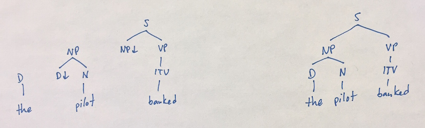
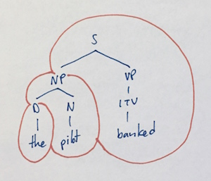
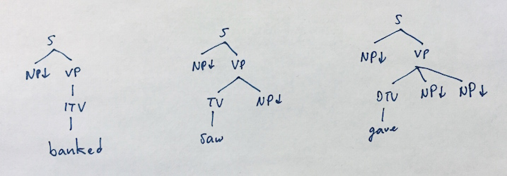
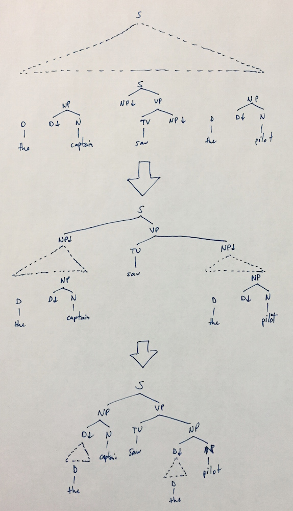
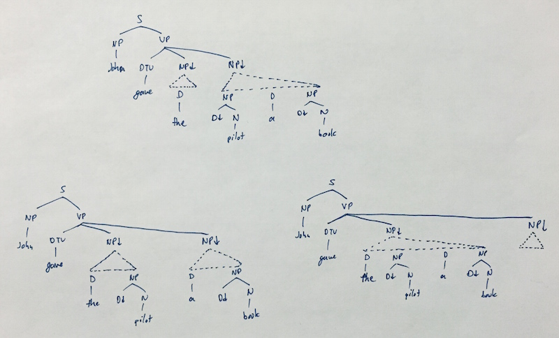
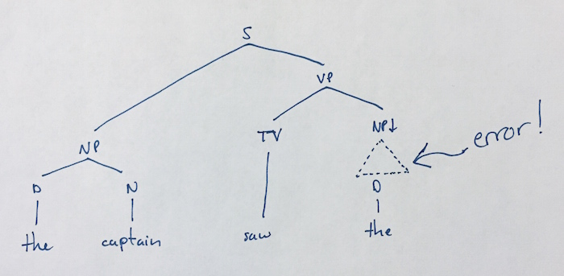
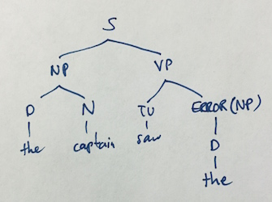
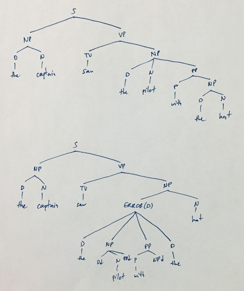
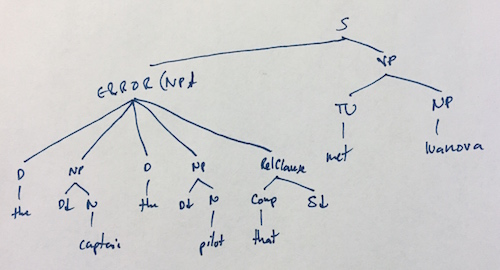

posted by Beka on 21 Feb 2015
In this blog post, I want to follow up on my previous post about robust error handling when parsing by discussing one interesting, though imperfect, solution to the problem that we get by using a Lexicalized Tree Substitution Grammar (LTSG), which is a non-adjunction fragment of a Lezicalized Tree Adjoining Grammar. If you're not familiar with TAGs or LTAGs, this tutorial provides an excellent overview. The section on constraint-based TAGs isn't necessary, just the ones up to LTAGs.
A Property of LTSGs
There is a relatively straight forward observation that we can make about LTSGs (and indeed all LTAGs) which is that given any initial sequence of initial trees corresponding to words, if there is a parse at all, then the parse tree's nodes are all already present in the collection of initial trees. All that's missing is the ways these initial trees compose together to form the final parse tree.
For instance, consider the sentence the pilot banked. If we take this sequence of words and extend it to have initial trees, like on the left below, then it can parse to the tree on the right:

Here's the same parse tree, but with the initial trees circled, to highlight the fact that the parse tree has no additional nodes or structure that weren't present in those initial trees:

This means that if we're trying to parse an input as a tree rooted at a node S, lets say, then that node must already be present in the initial trees that come from the words in the input. One of those initial trees must be the one that forms the root of parse tree we want. A parsing algorithm is readily extracted from this.
A Basic LTSG Parsing Algorithm
The algorithm we want is easier to explain if we simplify first: lets assume that all our initial trees have at most one non-terminal frontier node to the left of the lexical head, and at most one to the right of the lexical head. So for instance, the trees for the verbs "banked" and "saw" have this property, but the tree for "gave" does not:

We'll come to the "give"-like trees shortly, but this simplification help for explaining the idea.
Now, if we want to parse the sentence the captain saw the pilot as an S, the problem can be solved by picking an initial tree rooted at S, which in this case must be the tree for "saw", and then splitting the input in two, and using the left half the parse as an NP because the left non-terminal frontier node for saw is an NP, and using the right half to parse as an NP because the right non-terminal frontier node for saw is also an NP:

This sets up two sub-problems that have the exact same structure as the whole problem, as shown, and so we can define a nice recursive algorithm like so (using ++ to indicate concatenation):
to parse INPUT as an X, pick a random initial tree T rooted at a node labeled X from INPUT, and split so that INPUT = LEFT ++ [T] ++ RIGHT.
if T has left frontier node L, parse LEFT as L, and if T has right frontier node R, parse RIGHT as R.
if INPUT is empty, this (sub-)parse fails.This is obviously a non-deterministic algorithm, as we might have multiple initial trees in the input that have the desired root label, but only one can be the root, so we have to try them all. There are ways to cut down on the non-determinism by counting frontier nodes, etc. but that's not important right now.
The move now to include trees like the "gave" tree, which has multiple non-terminal frontier nodes to the right of the head word is now relatively straight-forward. Instead of just parsing a sequence of initial trees as a label, we also need to be able to parse a sequence of initial trees as a sequence of labels. We can do this by splitting the sequence of initial trees into an appropriate number of subsequences, and then parsing each as the corresponding individual label:

Again this is non-deterministic, because we could split the sequence of trees up any number of ways, some shown above, and again there are ways to cut down on the non-determinism that we can ignore for now.
Robustness of the Algorithm
This algorithm is somewhat robust. If at any point we cannot find a parse of a (sub-)input for a given goal label, we can wrap that entire input up in an error node in the tree, and pretend that it succeeded. For example, the sentence the captain saw the should fail to find an initial tree labeled with NP for the parse of the object of the verb, so subgoal would fail:

At that point, its easy enough to wrap it and return the error node, producing the tree

There will naturally be many failed parses, because of the non-determinism, even after cutting down on it. For example, the sentence "the captain saw the pilot with the hat" will result in the following two parse trees (among others), one of which has an error in it because of an incorrect choice for the direct object:

These trees can be scored by how many errors they have, or how big the errors are, or whatnot, to pick a most-likely-tree.
These trees can also be used with heuristics, including ones derived from machine learning, to try to repair the errors. For instance, the error node in the ungrammatical sentence the captain saw the might strongly predict that there is a missing noun, and that this is the way to correct the error.
Not Robust Enough
Despite being robust to errors, this approach has some flaws. The errorful sentence the captain saw the highlights an interesting problem: if a word is missing, and it's the word that should profit the root node for a (sub-)parse, then there will be a serious problem for that sub parse.
If the missing word is the only word with the necessary root for that entire string of input, then none of that input will be parsed at all, and the error node will be fairly uninformative. For instance, suppose we left out the verb as in the captain the pilot with the hat. In this case, there is no candidate initial tree rooted at S so the entire thing is an error node, with no parsing attempted at all.
Alternatively, if the missing word isn't the only one with that root label, then the others will be tried as well, and depending on how we score errors, these might score better, even tho a human might not even consider them to be possible parses at all. For instance, here is a parse for the sentence the captain the pilot that met Ivanova, where one verb is missing:

Notice that the missing first verb produces an error node containing the whole input, but the second verb, mistakenly chosen to be the root in the second and third trees, allows more of the sentence to be parsed.
Ideally, we'd like to get error nodes that correspond to human intuitions about where an error is. In all of these examples, a missing word is not perceived by the human reader as justification for some wild alternative parse, but rather its seen precisely as that: a missing word. Our response is not to pick some better parse, but to reply "I think you a word".
In the next post in this series, I'll talk about a parsing technique that can successfully handle missing words as such, but which again is not perfectly suited to the task of parsing natural language.
If you have comments or questions, get it touch. I'm @psygnisfive on Twitter, augur on freenode (in #languagengine and #haskell).